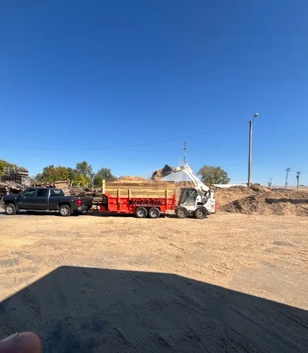
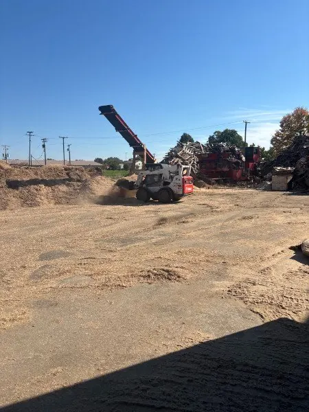

Keeps stalls drier
Wood fiber soaks up moisture and helps control odor between cleanings.
- Stalls and free stalls
- Poultry litter
Bulk · Ground wood · Farm delivery
Absorbent ground-wood bedding for barns, stalls and coops, made from clean wood recovered at our yard. Loaded into your truck or delivered to your farm by the trailer load.

Load-outWatch the process
This is how our bedding gets made. Wood that can't be rebuilt into a pallet goes into the tub grinder, a conveyor stacks the ground material, and a skid steer loads it straight into a dump trailer for delivery.
Clean recovered wood is fed into the tub grinder.
A conveyor stacks the ground material into a pile.
Loaded by skid steer into your truck or our trailer.
Why ground-wood bedding
Wood fiber soaks up moisture and helps control odor between cleanings.
No bags to cut and haul. Bulk loads cost less per stall and save handling time.
Produced from wood recovered within our own service area, so it doesn't travel far to reach you.

Grinder & stackerOrdering
Tell us how many animals you're bedding, how often you clean out, and whether you'd like to pick up or have it delivered. We'll recommend a load size and a delivery rhythm.
FAQ
Our bedding is ground from clean wood recovered through our pallet recycling operation. We run it through a tub grinder, stack it with a conveyor, and load it out in bulk.
Customers use ground-wood bedding for horse stalls, cattle and dairy barns, goats, sheep, and poultry houses. Talk to us about your setup and we'll help you decide if it fits.
Bedding is sold in bulk by the load. You can pick it up at our Kendallville yard or have it delivered by dump trailer. Call for current availability and pricing.
Yes. We deliver bulk bedding to farms across Northeast Indiana, southern Michigan and northwest Ohio within roughly 100 miles.
Keep exploring
Send us your size, quantity and delivery address. We'll quote new, recycled or custom and tell you what's in stock now.